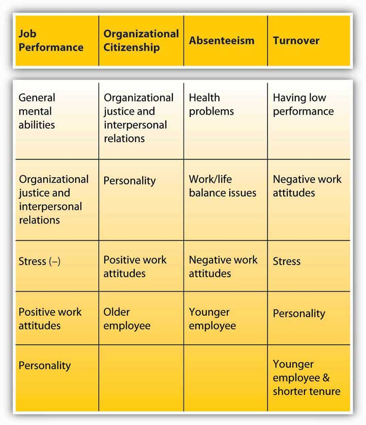

Reading this chapter will help you do the following:
Figure 2.2 The P-O-L-C Framework

Individuals bring a number of differences to work. They have a variety of personalities, values, and attitudes. When they enter into organizations, their stable or transient characteristics affect how they behave and perform. Moreover, companies hire people with the expectation that they have certain knowledge, skills, abilities, personalities, and values.
Recall that you are learning about the principles of management through the planning-organizing-leading-controlling (P-O-L-C) framework. Employees’ personalities, attitudes, and work behaviors affect how managers approach each P-O-L-C dimension. Here are just a few examples:
Therefore, it is important for managers to understand the individual characteristics that matter for employee and manager behaviors.
Who are your best customers? Which customers are bringing you the most profits and which are the least profitable? Companies are increasingly relying on complicated data mining software to answer these and other questions. More than 92% of the top 100 companies on the Fortune Global 500 list are using software developed by SAS Institute Inc., the world’s largest privately held software company, for their business intelligence and analytical needs. The Cary, North Carolina, company is doing extremely well by any measure. They have over 10,000 employees worldwide, operate in over 100 countries, ranked number 1 on Fortune’s 2010 list of the “Best Companies to Work For,” and reported $2.31 billion in revenue in 2009 (their 33rd consecutive year of growth and profitability). They reinvested 23% of their 2009 revenue into research and development (R&D) activities. The company is quick to attribute their success to the performance and loyalty of their workforce. This is directly correlated with how they treat their employees.
SAS has perfected the art of employee management. It has been ranked on Fortune magazine’s best places to work list every year since the list was first published. Employees seem to genuinely enjoy working at SAS and are unusually attached to the company, resulting in a turnover rate that is less than 4% in an industry where 20% is the norm. In fact, when Google designed their own legendary campus in California, they visited the SAS campus to get ideas.
One thing SAS does well is giving its employees opportunities to work on interesting and challenging projects. The software developers have the opportunity to develop cutting-edge software to be used around the world. The company makes an effort to concentrate its business in the areas of analytics, which add the most value and help organizations best analyze disparate data for decision making, creating opportunities for SAS workers to be challenged. Plus, the company removes obstacles for employees. Equipment, policies, rules, and meetings that could impede productivity are eliminated.
SAS has treated employees well in bad times as well as in good times. CEO Jim Goodnight is quoted as saying, “For 2010, I make the same promise that I did last year—SAS will have no layoffs. Too many companies worldwide sacrificed employees and benefits to cut costs in 2009. SAS took the opposite stance, and we have been rewarded in employee loyalty and overall success of the business. Maintaining this position throughout the downturn puts us in the best position to meet the expected market upturn.”
In addition, the company has a reputation as a pioneer when it comes to the perks it offers employees, but these perks are not given with a mentality of “offer everything but the kitchen sink.” There is careful thinking and planning behind the choice of perks the company offers. SAS conducts regular employee satisfaction surveys, and any future benefits and perks offered are planned in response to the results. The company wants to eliminate stressors and anything that dissatisfies from people’s lives. To keep employees healthy and fit, there are athletic fields; a full gym; a swimming pool; and tennis, basketball, and racquetball courts on campus. Plus, the company offers free on-site health care for employees, covers dependents at their fully staffed primary medical care center, and offers unlimited sick leave. The company understands that employees have a life and encourages employees to work reasonable hours and then go home to their families. In fact, a famous motto in the company is, “If you are working for more than 8 hours, you are just adding bugs.” SAS is truly one of the industry leaders in leveraging its treatment of people for continued business success.
Case written by [citation redacted per publisher request]. Based on information from Doing well by being rather nice. (2007, December 1). Economist. Retrieved April 30, 2010, from http://www.financialexpress.com/news/doing-well-by-being-rather-nice/247090; Cakebread, C. (2005, July). SAS…not SOS. Benefits Canada, 29(7), 18; Florida, R., & Goodnight, J. (2005, July–August). Managing for creativity. Harvard Business Review, 83(7/8), 124–131; Karlgaard, R. (2006, October 16). Who wants to be public? Forbes Asia, 2(17), 22; SAS ranks No. 1 on Fortune “Best Companies to Work For” list in America. (2010, January 21). SAS press release. Retrieved May 27, 2010, from http://www.sas.com/news/preleases/2010fortuneranking.html.
PersonalityThe relatively stable feelings, thoughts, and behavioral patterns a person has. encompasses a person’s relatively stable feelings, thoughts, and behavioral patterns. Each of us has a unique personality that differentiates us from other people, and understanding someone’s personality gives us clues about how that person is likely to act and feel in a variety of situations. To manage effectively, it is helpful to understand the personalities of different employees. Having this knowledge is also useful for placing people into jobs and organizations.
If personality is stable, does this mean that it does not change? You probably remember how you have changed and evolved as a result of your own life experiences, parenting style and attention you have received in early childhood, successes and failures you experienced over the course of your life, and other life events. In fact, personality does change over long periods of time. For example, we tend to become more socially dominant, more conscientious (organized and dependable), and more emotionally stable between the ages of 20 and 40, whereas openness to new experiences tends to decline as we age.Roberts, B. W., Walton, K. E., & Viechtbauer, W. (2006). Patterns of mean-level change in personality traits across the life course: A meta-analysis of longitudinal studies. Psychological Bulletin, 132, 1–25. In other words, even though we treat personality as relatively stable, change occurs. Moreover, even in childhood, our personality matters, and it has lasting consequences for us. For example, studies show that part of our career success and job satisfaction later in life can be explained by our childhood personality.Judge, T. A., & Higgins, C. A. (1999). The big five personality traits, general mental ability, and career success across the life span. Personnel Psychology, 52, 621–652; Staw, B. M., Bell, N. E., & Clausen, J. A. (1986). The dispositional approach to job attitudes: A lifetime longitudinal test. Administrative Science Quarterly, 31, 56–77.
Is our behavior in organizations dependent on our personality? To some extent, yes, and to some extent, no. While we will discuss the effects of personality for employee behavior, you must remember that the relationships we describe are modest correlations. For example, having a sociable and outgoing personality may encourage people to seek friends and prefer social situations. This does not mean that their personality will immediately affect their work behavior. At work, we have a job to do and a role to perform. Therefore, our behavior may be more strongly affected by what is expected of us, as opposed to how we want to behave. Especially in jobs that involve a lot of autonomy, or freedom, personality tends to exert a strong influence on work behavior,Barrick, M. R., & Mount, M. K. (1993). Autonomy as a moderator of the relationships between the big five personality dimensions and job performance. Journal of Applied Psychology, 78, 111–118.something to consider when engaging in Organizing activities such as job design or enrichment.
How many personality traits are there? How do we even know? In every language, there are many words describing a person’s personality. In fact, in the English language, more than 15,000 words describing personality have been identified. When researchers analyzed the traits describing personality characteristics, they realized that many different words were actually pointing to a single dimension of personality. When these words were grouped, five dimensions seemed to emerge, and these explain much of the variation in our personalities.Goldberg, L. R. (1990). An alternative “description of personality”: The big-five factor structure. Journal of Personality & Social Psychology, 59, 1216–1229. These five are not necessarily the only traits out there. There are other, specific traits that represent other dimensions not captured by the Big Five. Still, understanding them gives us a good start for describing personality.
Figure 2.5 The Big Five Personality Traits

Source: Goldberg, L. R. (1990). An alternative “description of personality”: The big-five factor structure. Journal of Personality & Social Psychology, 59, 1216–1229.
As you can see, the Big Five dimensions are openness, conscientiousness, extraversion, agreeableness, and Neuroticism—if you put the initials together, you get the acronym OCEAN. Everyone has some degree of each of these traits; it is the unique configuration of how high a person rates on some traits and how low on others that produces the individual quality we call personality.
OpennessThe degree to which a person is curious, original, intellectual, creative, and open to new ideas. is the degree to which a person is curious, original, intellectual, creative, and open to new ideas. People high in openness seem to thrive in situations that require flexibility and learning new things. They are highly motivated to learn new skills, and they do well in training settings.Barrick, M. R., & Mount, M. K. (1991). The big five personality dimensions and job performance: A meta-analysis. Personnel Psychology, 44, 1–26; Lievens, F., Harris, M. M., Van Keer, E., & Bisqueret, C. (2003). Predicting cross-cultural training performance: The validity of personality, cognitive ability, and dimensions measured by an assessment center and a behavior description interview. Journal of Applied Psychology, 88, 476–489. They also have an advantage when they enter into a new organization. Their open-mindedness leads them to seek a lot of information and feedback about how they are doing and to build relationships, which leads to quicker adjustment to the new job.Wanberg, C. R., & Kammeyer-Mueller, J. D. (2000). Predictors and outcomes of proactivity in the socialization process. Journal of Applied Psychology, 85, 373–385. When given support, they tend to be creative.Baer, M., & Oldham, G. R. (2006). The curvilinear relation between experienced creative time pressure and creativity: Moderating effects of openness to experience and support for creativity. Journal of Applied Psychology, 91, 963–970. Open people are highly adaptable to change, and teams that experience unforeseen changes in their tasks do well if they are populated with people high in openness.LePine, J. A. (2003). Team adaptation and postchange performance: Effects of team composition in terms of members’ cognitive ability and personality. Journal of Applied Psychology, 88, 27–39. Compared with people low in openness, they are also more likely to start their own business.Zhao, H., & Seibert, S. E. (2006). The big five personality dimensions and entrepreneurial status: A meta-analytic review. Journal of Applied Psychology, 91, 259–271. The potential downside is that they may also be prone to becoming more easily bored or impatient with routine.
ConscientiousnessThe degree to which a person is organized, systematic, punctual, achievement-oriented, and dependable. refers to the degree to which a person is organized, systematic, punctual, achievement-oriented, and dependable. Conscientiousness is the one personality trait that uniformly predicts how high a person’s performance will be across a variety of occupations and jobs.Barrick, M. R., & Mount, M. K. (1991). The big five personality dimensions and job performance: A meta-analysis. Personnel Psychology, 44, 1–26. In fact, conscientiousness is the trait most desired by recruiters, and highly conscientious applicants tend to succeed in interviews.Dunn, W. S., Mount, M. K., Barrick, M. R., & Ones, D. S. (1995). Relative importance of personality and general mental ability in managers’ judgments of applicant qualifications. Journal of Applied Psychology, 80, 500–509; Tay, C., Ang, S., & Van Dyne, L. (2006). Personality, biographical characteristics, and job interview success: A longitudinal study of the mediating effects of interviewing self-efficacy and the moderating effects of internal locus of control. Journal of Applied Psychology, 91, 446–454. Once they are hired, conscientious people not only tend to perform well, but they also have higher levels of motivation to perform, lower levels of turnover, lower levels of absenteeism, and higher levels of safety performance at work.Judge, T. A., & Ilies, R. (2002). Relationship of personality to performance motivation: A meta-analytic review. Journal of Applied Psychology, 87, 797–807; Judge, T. A., Martocchio, J. J, & Thoresen, C. J. (1997). Five-factor model of personality and employee absence. Journal of Applied Psychology, 82, 745–755; Wallace, C., & Chen, G. (2006). A multilevel integration of personality, climate, self-regulation, and performance. Personnel Psychology, 59, 529–557; Zimmerman, R. D. (2008). Understanding the impact of personality traits on individuals’ turnover decisions: A meta-analytic path model. Personnel Psychology, 61, 309–348. One’s conscientiousness is related to career success and career satisfaction over time.Judge, T. A., & Higgins, C. A. (1999). The big five personality traits, general mental ability, and career success across the life span. Personnel Psychology, 52, 621–652. Finally, it seems that conscientiousness is a valuable trait for entrepreneurs. Highly conscientious people are more likely to start their own business compared with those who are not conscientious, and their firms have longer survival rates.Certo, S. T., & Certo, S. C. (2005). Spotlight on entrepreneurship. Business Horizons, 48, 271–274; Zhao, H., & Seibert, S. E. (2006). The big five personality dimensions and entrepreneurial status: A meta-analytic review. Journal of Applied Psychology, 91, 259–271. A potential downside is that highly conscientious individuals can be detail-oriented rather than seeing the big picture.
ExtraversionThe degree to which a person is outgoing, talkative, sociable, and enjoys being in social situations. is the degree to which a person is outgoing, talkative, sociable, and enjoys socializing. One of the established findings is that they tend to be effective in jobs involving sales.Barrick, M. R., & Mount, M. K. (1991). The big five personality dimensions and job performance: A meta-analysis. Personnel Psychology, 44, 1–26; Vinchur, A. J., Schippmann, J. S., Switzer, F. S., & Roth, P. L. (1998). A meta-analytic review of predictors of job performance for salespeople. Journal of Applied Psychology, 83, 586–597. Moreover, they tend to be effective as managers and they demonstrate inspirational leadership behaviors.Bauer, T. N., Erdogan, B., Liden, R. C., & Wayne, S. J. (2006). A longitudinal study of the moderating role of extraversion: Leader-member exchange, performance, and turnover during new executive development. Journal of Applied Psychology, 91, 298–310; Bono, J. E., & Judge, T. A. (2004). Personality and transformational and transactional leadership: A meta-analysis. Journal of Applied Psychology, 89, 901–910. extraverts do well in social situations, and, as a result, they tend to be effective in job interviews. Part of this success comes from preparation, as they are likely to use their social network to prepare for the interview.Caldwell, D. F., & Burger, J. M. (1998). Personality characteristics of job applicants and success in screening interviews. Personnel Psychology, 51, 119–136; Tay, C., Ang, S., & Van Dyne, L. (2006). Personality, biographical characteristics, and job interview success: A longitudinal study of the mediating effects of interviewing self-efficacy and the moderating effects of internal locus of control. Journal of Applied Psychology, 91, 446–454. extraverts have an easier time than introverts do when adjusting to a new job. They actively seek information and feedback and build effective relationships, which helps them adjust.Wanberg, C. R., & Kammeyer-Mueller, J. D. (2000). Predictors and outcomes of proactivity in the socialization process. Journal of Applied Psychology, 85, 373–385. Interestingly, extraverts are also found to be happier at work, which may be because of the relationships they build with the people around them and their easier adjustment to a new job.Judge, T. A. Heller, D., & Mount, M. K. (2002). Five-factor model of personality and job satisfaction: A meta-analysis. Journal of Applied Psychology, 87, 530–541. However, they do not necessarily perform well in all jobs; jobs depriving them of social interaction may be a poor fit. Moreover, they are not necessarily model employees. For example, they tend to have higher levels of absenteeism at work, potentially because they may miss work to hang out with or attend to the needs of their friends.Judge, T. A., Martocchio, J. J., & Thoresen, C. J. (1997). Five-factor model of personality and employee absence. Journal of Applied Psychology, 82, 745–755.
AgreeablenessThe degree to which a person is nice, tolerant, sensitive, trusting, kind, and warm. is the degree to which a person is affable, tolerant, sensitive, trusting, kind, and warm. In other words, people who are high in agreeableness are likeable people who get along with others. Not surprisingly, agreeable people help others at work consistently; this helping behavior does not depend on their good mood.Ilies, R., Scott, B. A., & Judge, T. A. (2006). The interactive effects of personal traits and experienced states on intraindividual patterns of citizenship behavior. Academy of Management Journal, 49, 561–575. They are also less likely to retaliate when other people treat them unfairly.Skarlicki, D. P., Folger, R., & Tesluk, P. (1999). Personality as a moderator in the relationship between fairness and retaliation. Academy of Management Journal, 42, 100–108. This may reflect their ability to show empathy and to give people the benefit of the doubt. Agreeable people may be a valuable addition to their teams and may be effective leaders because they create a fair environment when they are in leadership positions.Mayer, D., Nishii, L., Schneider, B., & Goldstein, H. (2007). The precursors and products of justice climates: Group leader antecedents and employee attitudinal consequences. Personnel Psychology, 60, 929–963. At the other end of the spectrum, people low in agreeableness are less likely to show these positive behaviors. Moreover, people who are disagreeable are shown to quit their jobs unexpectedly, perhaps in response to a conflict with a boss or a peer.Zimmerman, R. D. (2008). Understanding the impact of personality traits on individuals’ turnover decisions: A meta-analytic path model. Personnel Psychology, 61, 309–348. If agreeable people are so nice, does this mean that we should only look for agreeable people when hiring? You might expect some jobs to require a low level of agreeableness. Think about it: When hiring a lawyer, would you prefer a kind and gentle person or someone who can stand up to an opponent? People high in agreeableness are also less likely to engage in constructive and change-oriented communication.LePine, J. A., & Van Dyne, L. (2001). Voice and cooperative behavior as contrasting forms of contextual performance: Evidence of differential relationships with big five personality characteristics and cognitive ability. Journal of Applied Psychology, 86, 326–336. Disagreeing with the status quo may create conflict, and agreeable people may avoid creating such conflict, missing an opportunity for constructive change.
NeuroticismThe degree to which a person is anxious, irritable, aggressive, temperamental, and moody. refers to the degree to which a person is anxious, irritable, temperamental, and moody. It is perhaps the only Big Five dimension where scoring high is undesirable. Neurotic people have a tendency to have emotional adjustment problems and habitually experience stress and depression. People very high in Neuroticism experience a number of problems at work. For example, they have trouble forming and maintaining relationships and are less likely to be someone people go to for advice and friendship.Klein, K. J., Beng-Chong, L., Saltz, J. L., & Mayer, D. M. (2004). How do they get there? An examination of the antecedents of centrality in team networks. Academy of Management Journal, 47, 952–963. They tend to be habitually unhappy in their jobs and report high intentions to leave, but they do not necessarily actually leave their jobs.Judge, T. A., Heller, D., & Mount, M. K. (2002). Five-factor model of personality and job satisfaction: A meta-analysis. Journal of Applied Psychology, 87, 530–541; Zimmerman, R. D. (2008). Understanding the impact of personality traits on individuals’ turnover decisions: A meta-analytic path model. Personnel Psychology, 61, 309–348. Being high in Neuroticism seems to be harmful to one’s career, as these employees have lower levels of career success (measured with income and occupational status achieved in one’s career). Finally, if they achieve managerial jobs, they tend to create an unfair climate at work.Mayer, D., Nishii, L., Schneider, B., & Goldstein, H. (2007). The precursors and products of justice climates: Group leader antecedents and employee attitudinal consequences. Personnel Psychology, 60, 929–963.
In contrast, people who are low on Neuroticism—those who have a positive affective disposition—tend to experience positive moods more often than negative moods. They tend to be more satisfied with their jobs and more committed to their companies.Connolly, J. J., & Viswesvaran, C. (2000). The role of affectivity in job satisfaction: A meta-analysis. Personality and Individual Differences, 29, 265–281; Thoresen, C. J., Kaplan, S. A., Barsky, A. P., de Chermont, K., & Warren, C. R. (2003). The affective underpinnings of job perceptions and attitudes: A meta-analytic review and integration. Psychological Bulletin, 129, 914–945. This is not surprising, as people who habitually see the glass as half full will notice the good things in their work environment while those with the opposite character will find more things to complain about. Whether these people are more successful in finding jobs and companies that will make them happy, build better relationships at work that increase their satisfaction and commitment, or simply see their environment as more positive, it seems that low Neuroticism is a strong advantage in the workplace.
Go to http://www.outofservice.com/bigfive to see how you score on these factors.
In addition to the Big Five, researchers have proposed various other dimensions, or traits, of personality. These include self-monitoring, proactive personality, self-esteem, and self-efficacy.
Self-monitoringThe extent to which a person is capable of monitoring one’s actions and appearance in social situations. refers to the extent to which a person is capable of monitoring his or her actions and appearance in social situations. People who are social monitors are social chameleons who understand what the situation demands and act accordingly, while low social monitors tend to act the way they feel.Snyder, M. (1974). Self-monitoring of expressive behavior. Journal of Personality and Social Psychology, 30, 526–537; Snyder, M. (1987). Public Appearances/Public Realities: The Psychology of Self-Monitoring. New York: Freeman. High social monitors are sensitive to the types of behaviors the social environment expects from them. Their ability to modify their behavior according to the demands of the situation they are in and to manage their impressions effectively are great advantages for them.Turnley, W. H., & Bolino, M. C. (2001). Achieving desired images while avoiding undesired images: Exploring the role of self-monitoring in impression management. Journal of Applied Psychology, 86, 351–360. They are rated as higher performers and emerge as leaders.Day, D. V., Schleicher, D. J., Unckless, A. L., & Hiller, N. J. (2002). Self-monitoring personality at work: A meta-analytic investigation of construct validity. Journal of Applied Psychology, 87, 390–401. They are effective in influencing other people and are able to get things done by managing their impressions. As managers, however, they tend to have lower accuracy in evaluating the performance of their employees. It seems that while trying to manage their impressions, they may avoid giving accurate feedback to their subordinates to avoid confrontations, which could hinder a manager’s ability to carry out the Controlling function.Jawahar, I. M. (2001). Attitudes, self-monitoring, and appraisal behaviors. Journal of Applied Psychology, 86, 875–883.
Proactive personalityA person’s inclination to fix what is wrong, change things, and use initiative to solve problems. refers to a person’s inclination to fix what is wrong, change things, and use initiative to solve problems. Instead of waiting to be told what to do, proactive people take action to initiate meaningful change and remove the obstacles they face along the way. Proactive individuals tend to be more successful in their job searches.Brown, D. J., Cober, R. T., Kane, K., Levy, P. E., & Shalhoop, J. (2006). Proactive personality and the successful job search: A field investigation with college graduates. Journal of Applied Psychology, 91, 717–726. They also are more successful over the course of their careers because they use initiative and acquire greater understanding of how the politics within the company work.Seibert, S. E. (1999). Proactive personality and career success. Journal of Applied Psychology, 84, 416–427; Seibert, S. E., Kraimer, M. L., & Crant, M. J. (2001). What do proactive people do? A longitudinal model linking proactive personality and career success. Personnel Psychology, 54, 845–874. Proactive people are valuable assets to their companies because they may have higher levels of performance.Crant, M. J. (1995). The proactive personality scale and objective job performance among real estate agents. Journal of Applied Psychology, 80, 532–537. They adjust to their new jobs quickly because they understand the political environment better and make friends more quickly.Kammeyer-Mueller, J. D., & Wanberg, C. R. (2003). Unwrapping the organizational entry process: Disentangling multiple antecedents and their pathways to adjustment. Journal of Applied Psychology, 88, 779–794; Thompson, J. A. (2005). Proactive personality and job performance: A social capital perspective. Journal of Applied Psychology, 90, 1011–1017. Proactive people are eager to learn and engage in many developmental activities to improve their skills.Major, D. A., Turner, J. E., & Fletcher, T. D. (2006). Linking proactive personality and the big five to motivation to learn and development activity. Journal of Applied Psychology, 91, 927–935. For all their potential, under some circumstances proactive personality may be a liability for a person or an organization. Imagine a person who is proactive but is perceived as too pushy, trying to change things other people are not willing to let go of, or using their initiative to make decisions that do not serve a company’s best interests. Research shows that a proactive person’s success depends on his or her understanding of the company’s core values, ability, and skills to perform the job and ability to assess situational demands correctly.Chan, D. (2006). Interactive effects of situational judgment effectiveness and proactive personality on work perceptions and work outcomes. Journal of Applied Psychology, 91, 475–481; Erdogan, B., & Bauer, T. N. (2005). Enhancing career benefits of employee proactive personality: The role of fit with jobs and organizations. Personnel Psychology, 58, 859–891.
Self-esteemThe degree to which a person has overall positive feelings about oneself. is the degree to which a person has overall positive feelings about himself or herself. People with high self-esteem view themselves in a positive light, are confident, and respect themselves. In contrast, people with low self-esteem experience high levels of self-doubt and question their self-worth. High self-esteem is related to higher levels of satisfaction with one’s job and higher levels of performance on the job.Judge, T. A., & Bono, J. E. (2001). Relationship of core self-evaluations traits—self esteem, generalized self efficacy, locus of control, and emotional stability—with job satisfaction and job performance: A meta-analysis. Journal of Applied Psychology, 86, 80–92. People with low self-esteem are attracted to situations where they will be relatively invisible, such as large companies.Turban, D. B., & Keon, T. L. (1993). Organizational attractiveness: An interactionist perspective. Journal of Applied Psychology, 78, 184–193. Managing employees with low self-esteem may be challenging at times because negative feedback given with the intention of improving performance may be viewed as a negative judgment on their worth as an employee. Therefore, effectively managing employees with relatively low self-esteem requires tact and providing lots of positive feedback when discussing performance incidents.
Which nations have the highest average self-esteem? Researchers asked this question by surveying almost 17,000 individuals across 53 nations, in 28 languages.
On the basis of this survey, these are the top 10 nations in terms of self-reported self-esteem:
The following are the 10 nations with the lowest self-reported self-esteem:
Source: Adapted from information in Denissen, J. J. A., Penke, L., & Schmitt, D. P. (2008, July). Self-esteem reactions to social interactions: Evidence for sociometer mechanisms across days, people, and nations. Journal of Personality & Social Psychology, 95, 181–196; Hitti, M. (2005). Who’s No. 1 in self-esteem? Serbia is tops, Japan ranks lowest, U.S. is no. 6 in global survey. WebMD. Retrieved November 14, 2008, from http://www.webmd.com/skin-beauty/news/20050927/whos-number-1-in-self-esteem; Schmitt, D. P., & Allik, J. (2005). The simultaneous administration of the Rosenberg self-esteem scale in 53 nationals: Culture-specific features of global self-esteem. Journal of Personality and Social Psychology, 89, 623–642.
Self-efficacyA belief that one can perform a specific task successfully. is a belief that one can perform a specific task successfully. Research shows that the belief that we can do something is a good predictor of whether we can actually do it. Self-efficacy is different from other personality traits in that it is job specific. You may have high self-efficacy in being successful academically, but low self-efficacy in relation to your ability to fix your car. At the same time, people have a certain level of generalized self-efficacy, and they have the belief that whatever task or hobby they tackle, they are likely to be successful in it.
Research shows that self-efficacy at work is related to job performance.Bauer, T. N., Bodner, T., Erdogan, B., Truxillo, D. M., & Tucker, J. S. (2007). Newcomer adjustment during organizational socialization: A meta-analytic review of antecedents, outcomes, and methods. Journal of Applied Psychology, 92, 707–721; Judge, T. A., Jackson, C. L., Shaw, J. C., Scott, B. A., & Rich, B. L. (2007). Self-efficacy and work-related performance: The integral role of individual differences. Journal of Applied Psychology, 92, 107–127; Stajkovic, A. D., & Luthans, F. (1998). Self-efficacy and work-related performance: A meta-analysis. Psychological Bulletin, 124, 240–261. This is probably because people with high self-efficacy actually set higher goals for themselves and are more committed to their goals, whereas people with low self-efficacy tend to procrastinate.Phillips, J. M., & Gully, S. M. (1997). Role of goal orientation, ability, need for achievement, and locus of control in the self-efficacy and goal-setting process. Journal of Applied Psychology, 82, 792–802; Steel, P. (2007). The nature of procrastination: A meta-analytic and theoretical review of quintessential self-regulatory failure. Psychological Bulletin, 133, 65–94; Wofford, J. C., Goodwin, V. L., & Premack, S. (1992). Meta-analysis of the antecedents of personal goal level and of the antecedents and consequences of goal commitment. Journal of Management, 18, 595–615. Academic self-efficacy is a good predictor of your grade point average, as well as whether you persist in your studies or drop out of college.Robbins, S. B., Lauver, K., Le, H., Davis, D., Langley, R., & Carlstrom, A. (2004). Do psychosocial and study skill factors predict college outcomes? A meta-analysis. Psychological Bulletin, 130, 261–288.
Is there a way of increasing employee’s self-efficacy? In addition to hiring people who are capable of performing the required job tasks, training people to increase their self-efficacy may be effective. Some people may also respond well to verbal encouragement. By showing that you believe they can be successful and effectively playing the role of cheerleader, a manager may be able to increase self-efficacy beliefs. Empowering people—giving them opportunities to test their skills so that they can see what they are capable of—is also a good way of increasing self-efficacy.Ahearne, M., Mathieu, J., & Rapp, A. (2005). To empower or not to empower your sales force? An empirical examination of the influence of leadership empowerment behavior on customer satisfaction and performance. Journal of Applied Psychology, 90, 945–955.
Personality is a potentially important predictor of work behavior. In job interviews, companies try to assess a candidate’s personality and the potential for a good match, but interviews are only as good as the people conducting them. In fact, interviewers are not particularly good at detecting the best trait that predicts performance: conscientiousness.Barrick, M. R., Patton, G. K., & Haugland, S. N. (2000). Accuracy of interviewer judgments of job applicant personality traits. Personnel Psychology, 53, 925–951.
One method some companies use to improve this match and detect the people who are potentially good job candidates is personality testing. Several companies conduct preemployment personality tests. Companies using them believe that these tests improve the effectiveness of their selection and reduce turnover. For example, Overnight Transportation in Atlanta found that using such tests reduced their on-the-job delinquency by 50%–100%.Emmett, A. (2004, October). Snake oil or science? That’s the raging debate on personality testing. Workforce Management, 83, 90–92; Gale, S. F. (2002, April). Three companies cut turnover with tests. Workforce, 81 (4), 66–69.
Figure 2.7

Companies such as Kronos and Hogan Assessments conduct preemployment personality tests. Kronos Incorporated Headquarters is located in Chelmsford, Massachusetts.
Yet, are these methods good ways of employee selection? Experts have not yet reached an agreement on this subject and the topic is highly controversial. Some experts cite data indicating that personality tests predict performance and other important criteria such as job satisfaction. However, we must understand that how a personality test is used influences its validity. Imagine filling out a personality test in class. You will probably fill it out as honestly as you can. Then, if your instructor correlates your personality scores with your class performance, we could say that the correlation is meaningful. But now imagine that your instructor tells you, before giving you the test, that based on your test scores, you will secure a coveted graduate assistant position, which comes with a tuition waiver and a stipend. In that case, would you still fill out the test honestly or would you try to make your personality look as “good” as possible?
In employee selection, where the employees with the “best” personalities will be the ones receiving a job offer, a complicating factor is that people filling out the survey do not have a strong incentive to be honest. In fact, they have a greater incentive to guess what the job requires and answer the questions in a way they think the company is looking for. As a result, the rankings of the candidates who take the test may be affected by their ability to fake. Some experts believe that this is a serious problem.Morgeson, F. P., Campion, M. A., Dipboye, R. L., Hollenbeck, J. R., Murphy, K., & Schmitt, N. (2007). Reconsidering the use of personality tests in personnel selection contexts. Personnel Psychology, 60, 683–729; Morgeson, F. P., Campion, M. A., Dipboye, R. L., Hollenbeck, J. R., Murphy, K., & Schmitt, N. (2007). Are we getting fooled again? Coming to terms with limitations in the use of personality tests for personnel selection. Personnel Psychology, 60, 1029–1049. Others point out that even with fakingAnswering questions in a way they think the company is looking for. the tests remain valid—the scores are related to job performance.Barrick, M. R., & Mount, M. K. (1996). Effects of impression management and self-deception on the predictive validity of personality constructs. Journal of Applied Psychology, 81, 261–272; Ones, D. S., Dilchert, S., Viswesvaran, C., & Judge, T. A. (2007). In support of personality assessment in organizational settings. Personnel Psychology, 60, 995–1027; Ones, D. S., Viswesvaran, C., & Reiss, A. D. (1996). Role of social desirability in personality testing for personnel selection. Journal of Applied Psychology, 81, 660–679; Tett, R. P., & Christiansen, N. D. (2007). Personality tests at the crossroads: A response to Morgeson, Campion, Dipboye, Hollenbeck, Murphy, and Schmitt (2007). Personnel Psychology, 60, 967–993. It is even possible that the ability to fake is related to a personality trait that increases success at work, such as social monitoring.
Scores on personality self-assessments are distorted for other reasons beyond the fact that some candidates can fake better than others. Do we even know our own personalities? Are we the best person to ask this question? How supervisors, coworkers, and customers see our personality may matter more than how we see ourselves. Therefore, using self-report measures of performance may not be the best way of measuring someone’s personality.Mount, M. K., Barrick, M. R., & Strauss, J. P. (1994). Validity of observer ratings of the big five personality factors. Journal of Applied Psychology, 79, 272–280. We have our blind areas. We may also give “aspirational” answers. If you are asked whether you are honest, you may think “yes, I always have the intention to be honest.” This actually says nothing about your actual level of honesty.
Another problem with using these tests is the uncertain relationship between performance and personality. On the basis of research, personality is not a particularly strong indicator of how a person will perform. According to one estimate, personality only explains about 10%–15% of variation in job performance. Our performance at work depends on many factors, and personality does not seem to be the key factor for performance. In fact, cognitive ability (your overall mental intelligence) is a more powerful predictor of job performance. Instead of personality tests, cognitive ability tests may do a better job of predicting who will be good performers. Personality is a better predictor of job satisfaction and other attitudes, but screening people out on the assumption that they may be unhappy at work is a challenging argument to make in an employee selection context.
In any case, if an organization decides to use these tests for selection, it is important to be aware of their limitations. If they are used together with other tests, such as tests of cognitive abilities, they may contribute to making better decisions. The company should ensure that the test fits the job and actually predicts performance. This is called validating the test. Before giving the test to applicants, the company could give it to existing employees to find out the traits that are most important for success in this particular company and job. Then, in the selection context, the company can pay particular attention to those traits.
Finally, the company also needs to make sure that the test does not discriminate against people on the basis of sex, race, age, disabilities, and other legally protected characteristics. Rent-a-Center experienced legal difficulties when the test they used was found to violate the Americans with Disabilities Act (ADA). The company used the Minnesota Multiphasic Personality Inventory for selection purposes, but this test was developed to diagnose severe mental illnesses; it included items such as “I see things or people around me others do not see.” In effect, the test served the purpose of a clinical evaluation and was discriminating against people with mental illnesses, which is a protected category under ADA.Heller, M. (2005, September). Court ruling that employer’s integrity test violated ADA could open door to litigation. Workforce Management, 84 (9), 74–77.
Figure 2.8 Values Included in Schwartz’s (1992) Value Inventory

ValuesStable life goals people have, reflecting what is most important to them. refer to people’s stable life goals, reflecting what is most important to them. Values are established throughout one’s life as a result of accumulating life experiences, and values tend to be relatively stable.Lusk, E. J., & Oliver, B. L. (1974). Research notes. American manager’s personal value systems-revisited. Academy of Management Journal, 17 (3), 549–554; Rokeach, M. (1973). The Nature of Human Values. New York: Free Press. The values that are important to a person tend to affect the types of decisions they make, how they perceive their environment, and their actual behaviors. Moreover, a person is more likely to accept a job offer when the company possesses the values he or she cares about.Judge, T. A., & Bretz, R. D. (1992). Effects of work values on job choice decisions. Journal of Applied Psychology, 77, 261–271; Ravlin, E. C., & Meglino, B. M. (1987). Effect of values on perception and decision making: A study of alternative work values measures. Journal of Applied Psychology, 72, 666–673. Value attainment is one reason people stay in a company. When a job does not help them attain their values, they are likely to decide to leave if they are dissatisfied with the job.George, J. M., & Jones, G. R. (1996). The experience of work and turnover intentions: Interactive effects of value attainment, job satisfaction, and positive mood. Journal of Applied Psychology, 81, 318–325.
What are the values people care about? As with personality dimensions, researchers have developed several frameworks, or typologies, of values. One of the particularly useful frameworks includes 10 values.Schwartz, S. H. (1992). Universals in the content and structure of values: Theoretical advances and empirical tests in 20 countries. In M. Zanna (Ed.), Advances in Experimental Social Psychology (pp. 1–65). San Diego: Academic Press.
Values a person holds will affect their employment. For example, someone who values stimulation highly may seek jobs that involve fast action and high risk, such as firefighter, police officer, or emergency medicine. Someone who values achievement highly may be likely to become an entrepreneur or intrapreneur. And an individual who values benevolence and universalism may seek work in the nonprofit sector with a charitable organization or in a “helping profession,” such as nursing or social work. Like personality, values have implications for Organizing activities, such as assigning duties to specific jobs or developing the chain of command; employee values are likely to affect how employees respond to changes in the characteristics of their jobs.
In terms of work behaviors, a person is more likely to accept a job offer when the company possesses the values he or she cares about. A firm’s values are often described in the company’s mission and vision statements, an element of the Planning function.Judge, T. A., & Bretz, R. D. (1992). Effects of work values on job choice decisions. Journal of Applied Psychology, 77, 261–271; Ravlin, E. C., & Meglino, B. M. (1987). Effect of values on perception and decision making: A study of alternative work values measures. Journal of Applied Psychology, 72, 666–673. Value attainment is one reason people stay in a company. When a job does not help them attain their values, they are likely to decide to leave if they are also dissatisfied with the job.George, J. M., & Jones, G. R. (1996). The experience of work and turnover intentions: Interactive effects of value attainment, job satisfaction, and positive mood. Journal of Applied Psychology, 81, 318–325.
Personality traits and values are two dimensions on which people differ. Personality is the unique, relatively stable pattern of feelings, thoughts, and behavior that each individual displays. Big Five personality dimensions (openness, conscientiousness, extraversion, agreeableness, and Neuroticism) are important traits; others that are particularly relevant for work behavior include self-efficacy, self-esteem, social monitoring, and proactive personality. While personality is a stronger influence over job attitudes, its relation to job performance is weaker. Some companies use personality testing to screen out candidates. Companies using personality tests are advised to validate their tests and use them to supplement other techniques with greater validity, such as tests of cognitive ability. Companies must also ensure that a test does not discriminate against any protected group. Values express a person’s life goals; they are similar to personality traits in that they are relatively stable over time. In the workplace, a person is more likely to accept a job that provides opportunities for value attainment. People are also more likely to remain in a job and career that satisfy their values.
Our behavior is not only a function of our personality and values but also of the situation. We interpret our environment, formulate responses, and act accordingly. PerceptionThe process by which individuals detect and interpret environmental stimuli. may be defined as the process by which individuals detect and interpret environmental stimuli. What makes human perception so interesting is that we do not solely respond to the stimuli in our environment. We go beyond the information that is present in our environment, pay selective attention to some aspects of the environment, and ignore other elements that may be immediately apparent to other people.
Our perception of the environment is not entirely rational. For example, have you ever noticed that while glancing at a newspaper or a news Web site, information that is especially interesting or important to you jumps out of the page and catches your eye? If you are a sports fan, while scrolling down the pages, you may immediately see a news item describing the latest success of your team. If you are the mother of a picky eater, an advice column on toddler feeding may be the first thing you see when looking at the page. If you were recently turned down for a loan, an item of financial news may jump out at you. Therefore, what we see in the environment is a function of what we value, our needs, our fears, and our emotions.Higgins, E. T., & Bargh, J. A. (1987). Social cognition and social perception. Annual Review of Psychology, 38, 369–425; Keltner, D., Ellsworth, P. C., & Edwards, K. (1993). Beyond simple pessimism: Effects of sadness and anger on social perception. Journal of Personality and Social Psychology, 64, 740–752. In fact, what we see in the environment may be objectively flat out wrong because of such mental tendencies. For example, one experiment showed that when people who were afraid of spiders were shown spiders, they inaccurately thought that the spider was moving toward them.Riskind, J. H., Moore, R., & Bowley, L. (1995). The looming of spiders: The fearful perceptual distortion of movement and menace. Behaviour Research and Therapy, 33, 171.
In this section, we will describe some common perceptual tendencies we engage in when perceiving objects or other people and the consequences of such perceptions. Our coverage of these perceptual biases is not exhaustive—there are many other biases and tendencies that can be found in the way people perceive stimuli.
Figure 2.10
What do you see?
Our visual perception definitely goes beyond the physical information available to us; this phenomenon is commonly referred to as “optical illusions.” Artists and designers of everything from apparel to cars to home interiors make use of optical illusions to enhance the look of the product. Managers rely on their visual perception to form their opinions about people and objects around them and to make sense of data presented in graphical form. Therefore, understanding how our visual perception may be biased is important.
First, we extrapolate from the information available to us. Take a look at the first figure. The white triangle you see in the middle is not really there, but we extrapolate from the information available to us and see it there. Similarly, when we look at objects that are partially blocked, we see the whole.Kellman, P. J., & Shipley, T. F. (1991). A theory of visual interpolation in object perception. Cognitive Psychology, 23, 141–221.
Now, look at the next figure. What do you see? Most people look at this figure and see two faces or a goblet, depending on which color—black or white—they focus upon. Our visual perception is often biased because we do not perceive objects in isolation. The contrast between our focus of attention and the remainder of the environment may make an object appear bigger or smaller.
This principle is shown here in the third figure. At first glance, the circle on the left may appear bigger, but they are the same size. This is due to the visual comparison of the middle circle on the left with its surrounding circles, whereas the middle circle on the right is compared with the bigger circles surrounding it.
How do these tendencies influence behavior in organizations? The fact that our visual perception is faulty means that managers should not always take what they see at face value. Let’s say that you do not like one of your peers and you think that you saw this person surfing the Web during work hours. Are you absolutely sure, or are you simply filling the gaps? Have you really seen this person surf unrelated Web sites, or is it possible that the person was searching for work-related purposes? The tendency to fill in the gaps also causes our memory to be faulty. Imagine that you have been at a meeting where several people made comments that you did not agree with. After the meeting, you may attribute most of these comments to people you did not like. In other words, you may twist the reality to make your memories more consistent with your opinions of people.
The tendency to compare and contrast objects and people to each other also causes problems. For example, if you are a manager who has been given an office much smaller than the other offices on the floor, you may feel that your workspace is crowded and uncomfortable. If the same office is surrounded by smaller offices, you may actually feel that your office is comfortable and roomy. In short, our biased visual perception may lead to the wrong inferences about the people and objects around us.
Figure 2.12
Which of the circles in the middle is bigger?
Human beings are prone to errors and biases when perceiving themselves. Moreover, the type of bias people have depends on their personality. Many people suffer from self-enhancement biasThe tendency to overestimate our performance and capabilities and to see ourselves in a more positive light than others see us.. This is the tendency to overestimate our performance and capabilities and see ourselves in a more positive light than others see us. People who have a narcissistic personality are particularly subject to this bias, but many others also have this bias to varying degrees.John, O. P., & Robins, R. W. (1994). Accuracy and bias in self-perception: Individual differences in self-enhancement and the role of narcissism. Journal of Personality and Social Psychology, 66, 206–219. At the same time, other people have the opposing extreme, which may be labeled as self-effacement biasThe tendency to underestimate our performance, capabilities, and see events in a way that puts ourselves in a more negative light. (or modesty bias). This is the tendency to underestimate our performance and capabilities and to see events in a way that puts ourselves in a more negative light. We may expect that people with low self-esteem may be particularly prone to making this error. These tendencies have real consequences for behavior in organizations. For example, people who suffer from extreme levels of self-enhancement tendencies may not understand why they are not getting promoted or rewarded, while those who have a tendency to self-efface may project low confidence and take more blame for their failures than necessary.
When human beings perceive themselves, they are also subject to the false consensus errorHow we as human beings overestimate how similar we are to other people.. Simply put, we overestimate how similar we are to other people.Fields, J. M., & Schuman, H. (1976). Public beliefs about the beliefs of the public. The Public Opinion Quarterly, 40 (4), 427–448; Ross, L., Greene, D., & House, P. (1977). The “false consensus effect”: An egocentric bias in social perception and attribution processes. Journal of Experimental Social Psychology, 13, 279–301. We assume that whatever quirks we have are shared by a larger number of people than in reality. People who take office supplies home, tell white lies to their boss or colleagues, or take credit for other people’s work to get ahead may genuinely feel that these behaviors are more common than they really are. The problem for behavior in organizations is that, when people believe that a behavior is common and normal, they may repeat the behavior more freely. Under some circumstances, this may lead to a high level of unethical or even illegal behaviors.
How we perceive other people in our environment is also shaped by our biases. Moreover, how we perceive others will shape our behavior, which in turn will shape the behavior of the person we are interacting with.
One of the factors biasing our perception is stereotypesGeneralizations based on a group characteristic.. Stereotypes are generalizations based on a group characteristic. For example, believing that women are more cooperative than men or that men are more assertive than women are stereotypes. Stereotypes may be positive, negative, or neutral. In the abstract, stereotyping is an adaptive function—we have a natural tendency to categorize the information around us to make sense of our environment. Just imagine how complicated life would be if we continually had to start from scratch to understand each new situation and each new person we encountered! What makes stereotypes potentially discriminatory and a perceptual bias is the tendency to generalize from a group to a particular individual. If the belief that men are more assertive than women leads to choosing a man over an equally qualified female candidate for a position, the decision will be biased, unfair, and potentially illegal.
Stereotypes often create a situation called self-fulfilling prophecyWhen an established stereotype causes one to behave in a certain way, which leads the other party to behave in a way that makes the stereotype come true.. This happens when an established stereotype causes one to behave in a certain way, which leads the other party to behave in a way that confirms the stereotype.Snyder, M., Tanke, E. D., & Berscheid, E. (1977). Social perception and interpersonal behavior: On the self-fulfilling nature of social stereotypes. Journal of Personality and Social Psychology, 35, 656–666. If you have a stereotype such as “Asians are friendly,” you are more likely to be friendly toward an Asian person. Because you are treating the other person more nicely, the response you get may also be nicer, which confirms your original belief that Asians are friendly. Of course, just the opposite is also true. Suppose you believe that “young employees are slackers.” You are less likely to give a young employee high levels of responsibility or interesting and challenging assignments. The result may be that the young employee reporting to you may become increasingly bored at work and start goofing off, confirming your suspicions that young people are slackers!
Stereotypes persist because of a process called selective perception. Selective perceptionWhen we pay selective attention to parts of the environment while ignoring other parts. simply means that we pay selective attention to parts of the environment while ignoring other parts, which is particularly important during the Planning process. Our background, expectations, and beliefs will shape which events we notice and which events we ignore. For example, an executive’s functional background will affect the changes he or she perceives in the environment.Waller, M. J., Huber, G. P., & Glick, W. H. (1995). Functional background as a determinant of executives’ selective perception. Academy of Management Journal, 38, 943–974. Executives with a background in sales and marketing see the changes in the demand for their product, while executives with a background in information technology may more readily perceive the changes in the technology the company is using. Selective perception may also perpetuate stereotypes because we are less likely to notice events that go against our beliefs. A person who believes that men drive better than women may be more likely to notice women driving poorly than men driving poorly. As a result, a stereotype is maintained because information to the contrary may not even reach our brain!
Let’s say we noticed information that goes against our beliefs. What then? Unfortunately, this is no guarantee that we will modify our beliefs and prejudices. First, when we see examples that go against our stereotypes, we tend to come up with subcategories. For example, people who believe that women are more cooperative when they see a female who is assertive may classify her as a “career woman.” Therefore, the example to the contrary does not violate the stereotype and is explained as an exception to the rule.Higgins, E. T., & Bargh, J. A. (1987). Social cognition and social perception. Annual Review of Psychology, 38, 369–425. Or, we may simply discount the information. In one study, people in favor of and against the death penalty were shown two studies, one showing benefits for the death penalty while the other disconfirming any benefits. People rejected the study that went against their belief as methodologically inferior and ended up believing in their original position even more!Lord, C. G., Ross, L., & Lepper, M. R. (1979) Biased assimilation and attitude polarization: The effects of prior theories on subsequently considered evidence. Journal of Personality and Social Psychology, 37, 2098–2109. In other words, using data to debunk people’s beliefs or previously established opinions may not necessarily work, a tendency to guard against when conducting Planning and Controlling activities.
One other perceptual tendency that may affect work behavior is first impressionsInitial thoughts and perceptions we form about people that tend to be stable and resilient to contrary information.. The first impressions we form about people tend to have a lasting effect. In fact, first impressions, once formed, are surprisingly resilient to contrary information. Even if people are told that the first impressions were caused by inaccurate information, people hold on to them to a certain degree because once we form first impressions, they become independent from the evidence that created them.Ross, L., Lepper, M. R., & Hubbard, M. (1975). Perseverance in self-perception and social perception: Biased attributional processes in the debriefing paradigm. Journal of Personality and Social Psychology, 32, 880–892. Therefore, any information we receive to the contrary does not serve the purpose of altering them. Imagine the first day that you met your colleague Anne. She treated you in a rude manner, and when you asked for her help, she brushed you off. You may form the belief that Anne is a rude and unhelpful person. Later on, you may hear that Anne’s mother is seriously ill, making Anne very stressed. In reality, she may have been unusually stressed on the day you first met her. If you had met her at a time when her stress level was lower, you could have thought that she is a really nice person. But chances are, your impression that she is rude and unhelpful will not change even when you hear about her mother. Instead, this new piece of information will be added to the first one: She is rude, unhelpful, and her mother is sick.
As a manager, you can protect yourself against this tendency by being aware of it and making a conscious effort to open your mind to new information. It would also be to your advantage to pay careful attention to the first impressions you create, particularly during job interviews.
Perception is how we make sense of our environment in response to environmental stimuli. While perceiving our surroundings, we go beyond the objective information available to us and our perception is affected by our values, needs, and emotions. There are many biases that affect human perception of objects, self, and others. When perceiving the physical environment, we fill in the gaps and extrapolate from the available information. When perceiving others, stereotypes influence our behavior. Stereotypes may lead to self-fulfilling prophecies. Stereotypes are perpetuated because of our tendency to pay selective attention to aspects of the environment and ignore information inconsistent with our beliefs. Understanding the perception process gives us clues to understanding human behavior.
How we behave at work often depends on how we feel about being there. Therefore, making sense of how people behave depends on understanding their work attitudes. An attitudeOur opinions, beliefs, and feelings about aspects of our environment. refers to our opinions, beliefs, and feelings about aspects of our environment. We have attitudes toward the food we eat, people we meet, courses we take, and things we do. At work, two job attitudes have the greatest potential to influence how we behave. These are job satisfaction and organizational commitment.
Job satisfactionThe feelings people have toward their job. refers to the feelings people have toward their job. If the number of studies conducted on job satisfaction is an indicator, job satisfaction is probably the most important job attitude. Institutions such as Gallup or the Society for Human Resource Management (SHRM) periodically conduct studies of job satisfaction to track how satisfied employees are at work. According to a recent Gallup survey, 90% of the employees surveyed said that they were at least somewhat satisfied with their jobs. A recent SHRM study revealed 40% who were very satisfied.Anonymous. (2007, August). What keeps employees satisfied? HR Focus, 10–13; Sandberg, J. (2008, April 15). For many employees, a dream job is one that isn’t a nightmare. Wall Street Journal, B1.
Organizational commitmentThe emotional attachment people have toward the company they work for. is the emotional attachment people have toward the company they work for. A highly committed employee is one who accepts and believes in the company’s values, is willing to put out effort to meet the company’s goals, and has a strong desire to remain with the company. People who are committed to their company often refer to their company as “we” as opposed to “they” as in “in this company, we have great benefits.” The way we refer to the company indicates the type of attachment and identification we have with the company.
There is a high degree of overlap between job satisfaction and organizational commitment because things that make us happy with our job often make us more committed to the company as well. Companies believe that these attitudes are worth tracking because they often are associated with outcomes that are important to the Controlling role, such as performance, helping others, absenteeism, and turnover.
What makes you satisfied with your job and develop commitment to your company? Research shows that people pay attention to several factors of their work environment, including characteristics of the job (a function of Organizing activities), how they are treated (related to Leadership actions), the relationships they form with colleagues and managers (also Leadership related), and the level of stress the job entails.
As we have seen earlier in this chapter, personality and values play important roles in how employees feel about their jobs.
Figure 2.14 Factors Contributing to Job Satisfaction and Organizational Commitment

Employees tend to be more satisfied and committed in jobs that involve certain characteristics. The ability to use a variety of skills, having autonomy at work, receiving feedback on the job, and performing a significant task are some job characteristics that are related to satisfaction and commitment. However, the presence of these factors is not important for everyone. Some people have a high need for growth. These employees tend to be more satisfied when their jobs help them build new skills and improve.Loher, B. T., Noe, R. A., Moeller, N. L., & Fitzgerald, M. P. (1985). A meta-analysis of the relation of job characteristics to job satisfaction. Journal of Applied Psychology, 70, 280–289; Mathieu, J. E., & Zajac, D. M. (1990). A review and meta-analysis of the antecedents, correlates, and consequences of organizational commitment. Psychological Bulletin, 108, 171–194.
A strong influence over our satisfaction level is how fairly we are treated. People pay attention to the fairness of company policies and procedures, fair and kind treatment from supervisors, and fairness of their pay and other rewards they receive from the company.Cohen-Charash, Y., & Spector, P. E. (2001). The role of justice in organizations: A meta-analysis. Organizational Behavior and Human Decision Processes, 86, 278–321; Colquitt, J. A., Conlon, D. E., Wesson, M. J., Porter, C. O. L. H., & Ng, K. Y. (2001). Justice at the millennium: A meta-analytic review of 25 years of organizational justice research. Journal of Applied Psychology, 86, 425–445; Meyer, J. P., Stanley, D. J., Herscivitch, L., & Topolnytsky, L. (2002). Affective, continuance, and normative commitment to the organization: A meta-analysis of antecedents, correlates, and consequences. Journal of Vocational Behavior, 61, 20–52. Organizational justice can be classified into three categories: (1) procedural (fairness in the way policies and processes are carried out), (2) distributive (the allocation of resources or compensation and benefits), and (3) interactional (the degree to which people are treated with dignity and respect). At the root of organizational justice is trust, something that is easier to break than to repair if broken.
The psychological contractThe unspoken, informal understanding that an employee will contribute certain things to the organization and will receive certain things in return. is the unspoken, informal understanding that an employee will contribute certain things to the organization (e.g., work ability and a willing attitude) and will receive certain things in return (e.g., reasonable pay and benefits). Under the psychological contract, an employee may believe that if he or she works hard and receives favorable performance evaluations, he or she will receive an annual bonus, periodic raises and promotions, and will not be laid off. Since the “downsizing” trend of the past 20 years, many commentators have declared that the psychological contract is violated more often than not.
Two strong predictors of our happiness at work and commitment to the company are our relationships with coworkers and managers. The people we interact with, how friendly they are, whether we are socially accepted in our work group, whether we are treated with respect by them are important to our happiness at work. Research also shows that our relationship with our manager, how considerate the manager is, and whether we build a trust-based relationship with our manager are critically important to our job satisfaction and organizational commitment.Bauer, T. N., Bodner, T., Erdogan, B., Truxillo, D. M., & Tucker, J. S. (2007). Newcomer adjustment during organizational socialization: A meta-analytic review of antecedents, outcomes, and methods. Journal of Applied Psychology, 92, 707–721; Gerstner, C. R., & Day, D. V. (1997). Meta-analytic review of leader-member exchange theory: Correlates and construct issues. Journal of Applied Psychology, 82(6), 827–844; Judge, T. A., Piccolo, R. F., & Ilies, R. (2004). The forgotten ones? The validity of consideration and initiating structure in leadership research. Journal of Applied Psychology, 89, 36–51; Kinicki, A. J., McKee-Ryan, F. M., Schriesheim, C. A., & Carson, K. P. (2002). Assessing the construct validity of the job descriptive index: A review and meta-analysis. Journal of Applied Psychology, 87, 14–32; Mathieu, J. E., & Zajac, D. M. (1990). A review and meta-analysis of the antecedents, correlates, and consequences of organizational commitment. Psychological Bulletin, 108, 171–194; Meyer, J. P., Stanley, D. J., Herscivitch, L., & Topolnytsky, L. (2002). Affective, continuance, and normative commitment to the organization: A meta-analysis of antecedents, correlates, and consequences. Journal of Vocational Behavior, 61, 20–52; Rhoades, L., & Eisenberger, R. (2002). Perceived organizational support: A review of the literature. Journal of Applied Psychology, 87, 698–714. When our manager and overall management listen to us, care about us, and value our opinions, we tend to feel good at work. When establishing effective relations with employees, little signals that you care about your employees go a long way. For example, in 2004 San Francisco’s Hotel Carlton was taken over and renovated by a new management group, Joie de Vivre Hospitality. One of the small things the new management did that created dramatic results was that, in response to an employee attitude survey, they replaced the old vacuum cleaners housekeepers were using and started replacing them every year. It did not cost the company much to replace old machinery, but this simple act of listening to employee problems and taking action went a long way to make employees feel better.Dvorak, P. (2007, December 17). Theory and practice: Hotelier finds happiness keeps staff checked in; focus on morale boosts Joie de Vivre’s grades from workers, guests. Wall Street Journal, B3.
Not surprisingly, the amount of stress present in a job is related to employee satisfaction and commitment. Stressors range from environmental ones (noise, heat, inadequate ventilation) to interpersonal ones (organizational politics, conflicts with coworkers) to organizational ones (pressure to avoid making mistakes, worrying about the security of the job). Some jobs, such as intensive care unit nurse and military fighter pilot, are inherently very stressful.
Another source of stress has to do with the roles people are expected to fulfill on and off the job. Role ambiguity is uncertainty about what our responsibilities are in the job. Role conflict involves contradictory demands at work; it can also involve conflict between fulfilling one’s role as an employee and other roles in life, such as the role of parent, friend, or community volunteer.
Generally speaking, the higher the stress level, the lower job satisfaction tends to be. But not all stress is bad, and some stressors actually make us happier! For example, working under time pressure and having a high degree of responsibility are stressful, but they are also perceived as challenges and tend to be related to high levels of satisfaction.Kinicki, A. J., McKee-Ryan, F. M., Schriesheim, C. A., & Carson, K. P. (2002). Assessing the construct validity of the job descriptive index: A review and meta-analysis. Journal of Applied Psychology, 87, 14–32; Meyer, J. P., Stanley, D. J., Herscivitch, L., & Topolnytsky, L. (2002). Affective, continuance, and normative commitment to the organization: A meta-analysis of antecedents, correlates, and consequences. Journal of Vocational Behavior, 61, 20–52; Miller, B. K., Rutherford, M. A., & Kolodinsky, R. W. (2008). Perceptions of organizational politics: A meta-analysis of outcomes. Journal of Business and Psychology, 22, 209–222; Podsakoff, N. P., LePine, J. A., & LePine, M. A. (2007). Differential challenge stressor-hindrance stressor relationships with job attitudes, turnover intentions, turnover, and withdrawal behavior: A meta-analysis. Journal of Applied Psychology, 92, 438–454.
Given that work attitudes may give us clues about who will leave or stay, who will perform better, and who will be more engaged, tracking satisfaction and commitment levels is a helpful step for companies. If there are companywide issues that make employees unhappy and disengaged, these need to be resolved. There are at least two systematic ways in which companies can track work attitudes: through attitude surveysSurveys that are given to employees tracking their work attitudes. and exit interviews. Companies such as KFC and Long John Silver restaurants, the SAS Institute, Google, and others give periodic attitude surveys, which are used to track employee work attitudes. Companies can get more out of these surveys if responses are held confidential. If employees become concerned that their individual responses will be shared with their immediate manager, they are less likely to respond honestly. Moreover, success of these surveys depends on the credibility of management in the eye of employees. If management periodically collects these surveys but no action comes out of them, employees may adopt a more cynical attitude and start ignoring these surveys, hampering the success of future efforts. Exit interviewsA meeting with the departing employee. involve a meeting with the departing employee. This meeting is often conducted by a member of the human resource management department. If conducted well, this meeting may reveal what makes employees dissatisfied at work and give management clues about areas for improvement.
How strong is the attitude-behavior link? First of all, it depends on the attitude in question. Your attitudes toward your colleagues may influence whether you actually help them on a project, but they may not be a good predictor of whether you quit your job. Second, it is worth noting that attitudes are more strongly related to intentions to behave in a certain way, rather than actual behaviors. When you are dissatisfied with your job, you will have the intention to leave. Whether you actually leave will be a different story! Your leaving will depend on many factors, such as availability of alternative jobs in the market, your employability in a different company, and sacrifices you have to make while changing jobs. Thus, while the attitudes assessed through employee satisfaction surveys and exit interviews can provide some basis for predicting how a person might behave in a job, remember that behavior is also strongly influenced by situational constraints.
Work attitudes are the feelings we have toward different aspects of the work environment. Job satisfaction and organizational commitment are two key attitudes that are the most relevant to important outcomes. In addition to personality and fit with the organization, work attitudes are influenced by the characteristics of the job, perceptions of organizational justice and the psychological contract, relationships with coworkers and managers, and the stress levels experienced on the job. Many companies assess employee attitudes through surveys of worker satisfaction and through exit interviews. The usefulness of such information is limited, however, because attitudes create an intention to behave in a certain way, but they do not always predict actual behaviors.
As we have seen in the earlier sections of this chapter, human beings bring in their personality, values, attitudes, perceptions, and other stable traits to work. Imagine that you are interviewing an employee who is proactive, creative, and willing to take risks. Would this person be a good job candidate? What behaviors would you expect this person to demonstrate?
The questions we pose here are misleading. While human beings bring their traits to work, every organization is also different, and every job is different. According to the interactionist perspective, behavior is a function of the person and the situation interacting with each other. Think about it. Would a shy person speak up in class? While a shy person may not feel like speaking if he or she is very interested in the subject, knows the answers to the questions, feels comfortable within the classroom environment, and knows that class participation is 30% of the course grade, this person may speak up in class regardless of his or her shyness. Similarly, the behavior you may expect from someone who is proactive, creative, and willing to take risks will depend on the situation.
The fit between what we bring to our work environment and the environmental demands influences not only our behavior but also our work attitudes. Therefore, person-job fit and person-organization fit are positively related to job satisfaction and commitment. When our abilities match job demands, and when our values match company values, we tend to be more satisfied with our job and more committed to the company we work for.Kristof-Brown, A. L., Zimmerman, R. D., & Johnson, E. C. (2005). Consequences of individuals’ fit at work: A meta-analysis of person-job, person-organization, person-group, and person-supervisor fit. Personnel Psychology, 58, 281–342; Verquer, M. L., Beehr, T. A., & Wagner, S. H. (2003). A meta-analysis of relations between person-organization fit and work attitudes. Journal of Vocational Behavior, 63, 473–489.
When companies hire employees, they are interested in assessing at least two types of fit. Person-organization fitThe degree to which a person’s values, personality, goals, and other characteristics match those of the organization. refers to the degree to which a person’s personality, values, goals, and other characteristics match those of the organization. Person-job fitThe degree to which a person’s skill, knowledge, abilities, and other characteristics match the job demands. is the degree to which a person’s knowledge, skills, abilities, and other characteristics match the job demands. (Human resources professionals often use the abbreviation KSAO to refer to these four categories of attributes.) Thus, someone who is proactive and creative may be a great fit for a company in the high-tech sector that would benefit from risk-taking individuals but may be a poor fit for a company that puts a high priority on routine and predictable behavior, such as a nuclear power plant. Similarly, this proactive and creative person may be a great fit for a field-based job such as marketing manager but a poor fit for an office job highly dependent on rules such as accountant.
When people fit into their organization, they tend to be more satisfied with their jobs, more committed to their companies, are more influential in their company, and remain longer in their company.Anderson, C., Spataro, S. E., & Flynn, F. J. (2008). Personality and organizational culture as determinants of influence. Journal of Applied Psychology, 93, 702–710; Cable, D. M., & DeRue, D. S. (2002). The convergent and discriminant validity of subjective fit perceptions. Journal of Applied Psychology, 87, 875–884; Kristof-Brown, A. L., Zimmerman, R. D., & Johnson, E. C. (2005). Consequences of individuals’ fit at work: A meta-analysis of person-job, person-organization, person-group, and person-supervisor fit. Personnel Psychology, 58, 281–342; O’Reilly, C. A., Chatman, J., & Caldwell, D. F. (1991). People and organizational culture: A profile comparison approach to assessing person-organization fit. Academy of Management Journal, 34, 487–516; Saks, A. M., & Ashforth, B. E. (2002). Is job search related to employment quality? It all depends on the fit. Journal of Applied Psychology, 87, 646–654. One area of controversy is whether these people perform better. Some studies found a positive relationship between person-organization fit and job performance, but this finding was not present in all studies, so it seems that only sometimes fitting with a company’s culture predicts job performance.Arthur, W., Bell, S. T., Villado, A. J., & Doverspike, D. (2006). The use of person-organization fit in employment decision making: An assessment of its criterion-related validity. Journal of Applied Psychology, 91, 786–801. It also seems that fitting in with the company values is important to some people more than to others. For example, people who have worked in multiple companies tend to understand the effect of a company’s culture better and therefore pay closer attention to whether they will fit in with the company when making their decisions.Kristof-Brown, A. L., Jansen, K. J., & Colbert, A. E. (2002). A policy-capturing study of the simultaneous effects of fit with jobs, groups, and organizations. Journal of Applied Psychology, 87, 985–993. Also, when they build good relationships with their supervisors and the company, being a misfit does not seem to matter as much.Erdogan, B., Kraimer, M. L., & Liden, R. C. (2004). Work value congruence and intrinsic career success. Personnel Psychology, 57, 305–332.
While personality, values, attitudes, perceptions, and KSAOs are important, we need to keep in mind that behavior is jointly determined by the person and the situation. Certain situations bring out the best in people, and someone who is a poor performer in one job may turn into a star employee in a different job. Therefore, managers need to consider the individual and the situation when making Organizing decisions about the job or when engaging in Leadership activities like building teams or motivating employees.
One of the important objectives of the field of organizational behavior is to understand why people behave the way they do. Which behaviors are we referring to here? We will focus on four key work behaviors: job performance, organizational citizenship behaviors, absenteeism, and turnover. Note that the first two behaviors are desirable ones, whereas the other two are often regarded as undesirable. While these four are not the only behaviors organizational behavior is concerned about, if you understand what we mean by these behaviors and the major influences over each type of behavior, you will gain more clarity about analyzing the behaviors of others in the workplace.
Figure 2.15 Factors That Have the Strongest Influence over Work Behaviors
Job performanceThe performance level on factors included in the job description. refers to the level to which an employee successfully fulfills the factors included in the job description. For each job, the content of job performance may differ. Measures of job performance include quality and quantity of work performed by the employee, the accuracy and speed with which the job is performed, and the overall effectiveness of the person on the job.
In many companies, job performance determines whether a person is promoted, rewarded with pay raises, given additional responsibilities, or fired from the job. Therefore, most employers observe and track job performance. This is done by keeping track of data on topics such as the number of sales the employee closes, the number of clients the employee visits, the number of defects found in the employee’s output, or the number of customer complaints or compliments received about the person’s work. In some jobs, objective performance data may not be available, and instead supervisor, coworker, customer, and subordinate assessments of the quality and quantity of work performed by the person become the indicators of job performance. Job performance is one of the main outcomes studied in organizational behavior and is an important variable managers must assess when they are engaged in the Controlling role.
Under which conditions do people perform well, and what are the characteristics of high performers? These questions receive a lot of research attention. It seems that the most powerful influence over our job performance is our general mental abilityOur reasoning abilities, verbal and numerical skills, analytical skills, or overall intelligence level. also known as cognitive ability or intelligence, and often abbreviated as “g.” General mental ability can be divided into several components—reasoning abilities, verbal and numerical skills, and analytical skills—and it seems to be important across different situations. It seems that “g” starts influencing us early in our school days because it is strongly correlated with measures of academic success even in childhood.Kuncel, N. R., Hezlett, S. A., & Ones, D. S. (2004). Academic performance, career potential, creativity, and job performance: Can one construct predict them all? Journal of Personality and Social Psychology, 86, 148–161. In adult life, “g” is also correlated with different measures of job performance.Bertua, C., Anderson, N., & Salgado, J. F. (2005). The predictive validity of cognitive ability tests: A UK meta-analysis. Journal of Occupational and Organizational Psychology, 78, 387–409; Kuncel, N. R., Hezlett, S. A., & Ones, D. S. (2004). Academic performance, career potential, creativity, and job performance: Can one construct predict them all? Journal of Personality and Social Psychology, 86, 148–161; Salgado, J. F., Anderson, N., Moscoso, S., Bertua, C., de Fruyt, F., & Rolland, J. P. (2003). A meta-analytic study of general mental ability validity for different occupations in the European Community. Journal of Applied Psychology, 88, 1068–1081; Schmidt, F. L., & Hunter, J. (2004). General mental ability of the world of work: Occupational attainment and job performance. Journal of Personality and Social Psychology, 86 (1), 162–173; Vinchur, A. J., Schippmann, J. S., Switzer, F. S., & Roth, P. L. (1998). A meta-analytic review of predictors of job performance for salespeople. Journal of Applied Psychology, 83, 586–597. It seems that the influence of “g” on performance is important across different settings, but there is also variation. In jobs with high complexity, it is much more critical to have high general mental abilities. Examples of such jobs are manager, sales representative, engineer, and professions such as law and medicine. In jobs such as police officer and clerical worker, the importance of “g” for high performance is still important but weaker.
Perceptions of organizational justice and interpersonal relationships are factors determining our performance level. When we feel that we are being fairly treated by the company, that our manager is supportive and rewards high performance, and when we trust the people we work with, we tend to perform better. Why? It seems that when we believe we are treated well, we want to reciprocate. Therefore, we treat the company well by performing our job more effectively.
The stress we experience on the job also determines our performance level. When we are stressed, our mental energies are drained. Instead of focusing on the task at hand, we start concentrating on the stressor trying to cope with it. Because our attention and energies are diverted to dealing with stress, our performance suffers. Having role ambiguity and experiencing conflicting role demands are related to lower performance.Gilboa, S., Shirom, A., Fried, Y., & Cooper, C. (2008). A meta-analysis of work demand stressors and job performance: Examining main and moderating effects. Personnel Psychology, 61, 227–271. Stress that prevents us from doing our jobs does not have to be related to our experiences at work. For example, according to a survey conducted by Workplace Options, 45% of the respondents said that financial stress affects work performance. When people are in debt, worrying about their mortgage payments or college payments of their kids, their performance will suffer.Anonymous. (2008, June). Financial stress: The latest worker risk. HR focus, 85(6), 12.
Our work attitudes, particularly job satisfaction, are also correlates of job performance but not to as great a degree as you might expect. Many studies have been devoted to understanding whether happy employees are more productive. Some studies show weak correlations between satisfaction and performance while others show higher correlations (what researchers would call “medium sized” correlations of .30).Iaffaldano, M. T., & Muchinsky, P. M. (1985). Job satisfaction and job performance: A meta-analysis. Psychological Bulletin, 97, 251–273; Judge, T. A., Thoresen, C. J., Bono, J. E., & Patton, G. T. (2001). The job satisfaction–job performance relationship: A qualitative and quantitative review. Journal of Applied Psychology, 127, 376–407; Riketta, M. (2008). The causal relation between job attitudes and performance: A meta-analysis of panel studies. Journal of Applied Psychology, 93, 472–481. The correlation between commitment and performance tends to be even weaker.Mathieu, J. E., & Zajac, D. M. (1990). A review and meta-analysis of the antecedents, correlates, and consequences of organizational commitment. Psychological Bulletin, 108, 171–194; Riketta, M. (2002). Attitudinal organizational commitment and job performance: A meta-analysis. Journal of Organizational Behavior, 23, 257–266; Wright, T. A., & Bonnett, D. G. (2002). The moderating effects of employee tenure on the relation between organizational commitment and job performance: A meta-analysis. Journal of Applied Psychology, 87, 1183–1190. Even with a correlation of .30, though, the relationship may be lower than you may have expected. Why is this the case?
It seems that happy workers have an inclination to be more engaged at work. They may want to perform better. They may be more motivated. But there are also exceptions. Think about this: Because you want to perform, does this mean that you will actually perform better? Chances are your skill level in performing the job will matter. There are also some jobs where performance depends on factors beyond an employee’s control, such as the pace of the machine they are working on. Because of this reason, in professional jobs such as with engineers and researchers, we see a stronger link between work attitudes and performance, as opposed to manual jobs such as assembly-line workers.Riketta, M. (2002). Attitudinal organizational commitment and job performance: A meta-analysis. Journal of Organizational Behavior, 23, 257–266. Also, think about the alternative possibility: If you don’t like your job, does this mean that you will reduce your performance? Maybe up to a certain point, but there will be factors that prevent you from reducing your performance: such as the fear of getting fired, the desire to get a promotion so that you can get out of the job that you dislike so much, or your professional work ethic. As another example, among nurses, there seems to be a weak correlation between satisfaction and performance. Even when they are unhappy, nurses put a lot of effort into their work because they feel a moral obligation to help their patients. As a result, we should not expect a one-on-one relationship between satisfaction and performance. Still, the observed correlation between work attitudes and performance is important and has practical value.
Finally, job performance has a modest relationship with personality traits, particularly conscientiousness. People who are organized, reliable, dependable, and achievement-oriented seem to outperform others in various contexts.Barrick, M. R., & Mount, M. K. (1991). The big five personality dimensions and job performance: A meta-analysis. Personnel Psychology, 44, 1–26; Dudley, N. M., Orvis, K. A., Lebiecki, J. E., & Cortina, J. M. (2006). A meta-analytic investigation of conscientiousness in the prediction of job performance: Examining the intercorrelations and the incremental validity of narrow traits. Journal of Applied Psychology, 91, 40–57; Vinchur, A. J., Schippmann, J. S., Switzer, F. S., & Roth, P. L. (1998). A meta-analytic review of predictors of job performance for salespeople. Journal of Applied Psychology, 83, 586–597.
While job performance refers to the performance of duties listed in one’s job description, organizational citizenship behaviors involve performing behaviors that are more discretionary. Organizational citizenship behaviors (OCB)Voluntary behaviors employees perform to help others and benefit the organization. are voluntary behaviors employees perform to help others and benefit the organization. Helping a new coworker understand how things work in this company, volunteering to organize the company picnic, and providing suggestions to management about how to improve business processes are some examples of citizenship behaviors. These behaviors contribute to the smooth operation of business.
What are the major predictors of citizenship behaviors? Unlike performance, citizenship behaviors do not depend so much on one’s abilities. Job performance, to a large extent, depends on our general mental abilities. When you add the education, skills, knowledge, and abilities that are needed to perform well, the role of motivation on performance becomes more limited. As a result, just because someone is motivated will not mean that the person will perform well. For citizenship behaviors, in contrast, the motivation-behavior link is clearer. We help others around us if we feel motivated to do so, and managers, in the Leadership role, are responsible for motivating employees.
Perhaps the most important factor explaining our citizenship behaviors is organizational justice and interpersonal relationships. When we have a good relationship with our manager and we are supported by our manager, when we are treated fairly, when we are attached to our peers, when we trust the people around us, we are more likely to engage in citizenship behaviors. A high-quality relationship with people we work with will mean that simply doing our job will not be enough to maintain the relationship. In a high-quality relationship, we feel the obligation to reciprocate and go the extra mile to help them out.Cohen-Charash, Y., & Spector, P. E. (2001). The role of justice in organizations: A meta-analysis. Organizational Behavior and Human Decision Processes, 86, 278–321; Colquitt, J. A., Conlon, D. E., Wesson, M. J., Porter, C. O. L. H., & Ng, K. Y. (2001). Justice at the millenium: A meta-analytic review of 25 years of organizational justice research. Journal of Applied Psychology, 86, 425–445; Colquitt, J. A., Scott, B. A., & LePine, J. A. (2007). Trust, trustworthiness, and trust propensity: A meta-analytic test of their unique relationships with risk taking and job performance. Journal of Applied Psychology, 92, 909–927; Fassina, N. E., Jones, D. A., & Uggerslev, K. L. (2008). Relationship clean-up time: Using meta-analysis and path analysis to clarify relationships among job satisfaction, perceived fairness, and citizenship behaviors. Journal of Management, 34, 161–188; Hoffman, B. J., Blair, C. A., Meriac, J. P., & Woehr, D. J. (2007). Expanding the criterion domain? A quantitative review of the OCB literature. Journal of Applied Psychology, 92, 555–566; Ilies, R., Nahrgang, J. D., & Morgeson, F. P. (2007). Leader-member exchange and citizenship behaviors: A meta-analysis. Journal of Applied Psychology, 92, 269–277; Lepine, J. A., Erez, A., & Johnson, D. E. (2002). The nature and dimensionality of organizational citizenship behavior: A critical review and meta-analysis. Journal of Applied Psychology, 87, 52–65; Organ, D. W., & Ryan, K. (1995). A meta-analytic review of attitudinal and dispositional predictors of organizational citizenship behavior. Personnel Psychology, 48, 775–802; Podsakoff, P. M., MacKenzie, S. B., & Bommer, W. H. (1996). Meta-analysis of the relationships between Kerr and Jermier’s substitutes for leadership and employee job attitudes, role perceptions, and performance. Journal of Applied Psychology, 81, 380–399; Riketta, M., & Van Dick, R. (2005). Foci of attachment in organizations: A meta-analytic comparison of the strength and correlates of workgroup versus organizational identification and commitment. Journal of Vocational Behavior, 67, 490–510.
Our personality is yet another explanation for why we perform citizenship behaviors. Personality is a modest predictor of actual job performance but a much better predictor of citizenship. People who are conscientious, agreeable, and low on Neuroticism tend to perform citizenship behaviors more often than others.Borman, W. C., Penner, L. A., Allen, T. D., & Motowidlo, S. J. (2001). Personality predictors of citizenship performance. International Journal of Selection and Assessment, 9, 52–69; Dalal, R. S. (2005). A meta-analysis of the relationship between organizational citizenship behavior and counterproductive work behavior. Journal of Applied Psychology, 90, 1241–1255; Diefendorff, J. M., Brown, D. J., Kamin, A. M., & Lord, R. G. (2002). Examining the roles of job involvement and work centrality in predicting organizational citizenship behaviors and job performance. Journal of Organizational Behavior, 23, 93–108; Organ, D. W., & Ryan, K. (1995). A meta-analytic review of attitudinal and dispositional predictors of organizational citizenship behavior. Personnel Psychology, 48, 775–802.
Job attitudes are also moderately related to citizenship behaviors—more so than they are to job performance. People who are happier at work, those who are more committed to their companies, and those who have overall positive attitudes toward their work situation tend to perform citizenship behaviors more often than others. When people are unhappy, they tend to be disengaged from their jobs and rarely go beyond the minimum that is expected of them.Dalal, R. S. (2005). A meta-analysis of the relationship between organizational citizenship behavior and counterproductive work behavior. Journal of Applied Psychology, 90, 1241–1255; Diefendorff, J. M., Brown, D. J., Kamin, A. M., & Lord, R. G. (2002). Examining the roles of job involvement and work centrality in predicting organizational citizenship behaviors and job performance. Journal of Organizational Behavior, 23, 93–108; Fassina, N. E., Jones, D. A., & Uggerslev, K. L. (2008). Relationship clean-up time: Using meta-analysis and path analysis to clarify relationships among job satisfaction, perceived fairness, and citizenship behaviors. Journal of Management, 34, 161–188; Hoffman, B. J., Blair, C. A., Meriac, J. P., & Woehr, D. J. (2007). Expanding the criterion domain? A quantitative review of the OCB literature. Journal of Applied Psychology, 92, 555–566; Lepine, J. A., Erez, A., & Johnson, D. E. (2002). The nature and dimensionality of organizational citizenship behavior: A critical review and meta-analysis. Journal of Applied Psychology, 87, 52–65; Organ, D. W., & Ryan, K. (1995). A meta-analytic review of attitudinal and dispositional predictors of organizational citizenship behavior. Personnel Psychology, 48, 775–802; Riketta, M. (2002). Attitudinal organizational commitment and job performance: A meta-analysis. Journal of Organizational Behavior, 23, 257–266; Riketta, M., & Van Dick, R. (2005). Foci of attachment in organizations: A meta-analytic comparison of the strength and correlates of workgroup versus organizational identification and commitment. Journal of Vocational Behavior, 67, 490–510.
Interestingly, age seems to be related to the frequency with which we demonstrate citizenship behaviors. People who are older are better citizens. It is possible that with age we gain more experiences to share. It becomes easier to help others because we have more accumulated company and life experiences to draw from.Ng, T. W. H., & Feldman, D. C. (2008). The relationship of age to ten dimensions of job performance. Journal of Applied Psychology, 93, 392–423.
Absenteeism refers to Unscheduled absences from work. Such absences are costly to companies because of their unpredictable nature, affecting a manager’s ability to Control the firm’s or department’s budget. When an employee has an unscheduled absence from work, companies struggle to find replacement workers at the last minute. This may involve hiring contingent workers, having other employees work overtime, or scrambling to cover for an absent coworker. The cost of absenteeismFailure to appear at work. to organizations is estimated at $74 billion. According to a Mercer Human Resource consulting study, 15% of the money spent on payroll is related to absenteeism.Conlin, M. (2007, November 12). Shirking working: The war on hooky. Business Week, 4058, 72–75; Gale, S. F. (2003, September). Sickened by the cost of absenteeism, companies look for solutions. Workforce Management, 82 (9), 72–75.
What causes absenteeism? First, we need to look at the type of absenteeism. Some absenteeism is unavoidable and is related to health reasons. For example, reasons such as acute or serious illness, lower back pain, migraines, accidents one may have on or off the job, or acute stress are important reasons for absenteeism.Farrell, D., & Stamm, C. L. (1988). Meta-analysis of the correlates of employee absence. Human Relations, 41, 211–227; Martocchio, J. J., Harrison, D. A., & Berkson, H. (2000). Connections between lower back pain, interventions, and absence from work: A time-based meta-analysis. Personnel Psychology, 53, 595–624. Health-related absenteeism is costly, but it would be unreasonable and unfair to institute organizational policies penalizing it. When an employee has a contagious illness, showing up at work will infect coworkers and will not be productive. If the illness is not contagious, it is still in the organization’s best interest for the employee to receive proper medical treatment and rest to promote a full recovery. Indeed, companies are finding that programs aimed at keeping workers healthy are effective in dealing with this type of absenteeism. Companies using wellness programs, educating employees about proper nutrition, helping them exercise, and rewarding them for healthy habits have reported reduced absenteeism.Parks, K. M., & Steelman, L. A. (2008). Organizational wellness programs: A meta-analysis. Journal of Occupational and Organizational Psychology, 13, 58–68.
Work/life balance is another common reason for absences. Staying home to care for a sick family member, attending the wedding or funeral of a loved one, and skipping work to study for an exam are all common reasons for unscheduled absences. Companies may deal with these by giving employees more flexibility in work hours. If employees can manage their own time, they are less likely to be absent. Conversely, when a company has “sick leave” but no other leave for social and family obligations, they may fake being sick and use their “sick leave.” One solution is to have a single paid time off policy that would allow workers to balance work and life and allow companies to avoid unscheduled absences. Organizations such as Lahey Clinic at Burlington, Massachusetts, have found this to be effective in dealing with unscheduled absences. Some companies such as IBM got rid of sick leave altogether and instead allow employees to take as much time off as they need, so long as the work gets done.Cole, C. L. (2002, September). Sick of absenteeism? Get rid of sick days. Workforce, 81(9), 56–61; Conlin, M. (2007, November 12). Shirking working: The war on hooky. Business Week, 4058, 72–75; Baltes, B. B., Briggs, T. E., Huff, J. W., Wright, J. A., & Neuman, G. A. (1999). Flexible and compressed workweek schedules: A meta-analysis of their effects on work-related criteria. Journal of Applied Psychology, 84, 496–513.
Sometimes, absenteeism is a form of work withdrawal and a step followed by turnover. In other words, poor work attitudes lead to absenteeism. When employees are dissatisfied with their work or have low organizational commitment, they are likely to be absent more often. Thus, absenteeism is caused by the desire to avoid an unpleasant work environment. In this case, management may deal with absenteeism by investigating the causes of dissatisfaction and dealing with them.
Are there personal factors contributing to absenteeism? Research does not reveal a consistent link between personality and absenteeism, but there is one demographic criterion that predicts absenteeism: age. Interestingly, and against some stereotypes that increased age would bring more health problems, research shows that age is negatively related to both frequency and duration of absenteeism. That is, younger workers are the ones more likely to be absent. Because of reasons that include higher loyalty to their company and a stronger work ethic, older employees are less likely be absent from work.Martocchio, J. J. (1989). Age-related differences in employee absenteeism: A meta-analysis. Psychology and Aging, 4, 409–414; Ng, T. W. H., & Feldman, D. C. (2008). The relationship of age to ten dimensions of job performance. Journal of Applied Psychology, 93, 392–423.
Turnover refers to an employee’s leaving an organization. Employee turnoverAn employee’s leaving an organization. has potentially harmful consequences, such as poor customer service and poor company-wide performance. When employees leave, their jobs still need to be performed by someone, so companies spend time recruiting, hiring, and training new employees, all the while suffering from lower productivity. Yet, not all turnover is bad. Turnover is particularly a problem when high-performing employees leave, while a poor performer’s leaving may actually give the company a chance to improve productivity and morale.
Why do employees leave? An employee’s performance level is an important reason. People who perform poorly are actually more likely to leave. These people may be fired, may be encouraged to quit, or may quit because of their fear of being fired. Particularly if a company has pay-for-performance systems, poor performers will find that they are not earning much due to their below-standard performance. This gives poor performers an extra incentive to leave. This does not mean that high performers will definitely stay with a company. High performers may find it easier to find alternative jobs, so when they are unhappy, they can leave more quickly.
Work attitudes are often the primary culprit in why people leave. When workers are unhappy at work, and when they do not feel committed to their companies, they are more likely to leave. Loving the things you do, being happy with the opportunities for advancement within the company, being happy about pay are all aspects of our work attitudes relating to turnover. Of course, the link between work attitudes and turnover is not direct. When employees are unhappy, they will have the intention to leave and may start looking for a job. But their ability to actually leave will depend on many factors, such as their employability and the condition of the job market. For this reason, when national and regional unemployment is high, many people who are unhappy will still continue to work for their current company. When the economy is doing well, people will start moving to other companies in response to being unhappy. Understanding the connection between employee happiness and turnover, many companies make an effort to make employees happy. SAS Institute employees have a 35-hour workweek and enjoy amenities such as a swimming pool and child care at work. The company’s turnover is around 4%–5%, in comparison to the industry averages ranging from 12%–20%.Carsten, J. M., & Spector, P. E. (1987). Unemployment, job satisfaction, and employee turnover: A meta-analytic test of the Muchinsky model. Journal of Applied Psychology, 72, 374–381; Cohen, A. (1991). Career stage as a moderator of the relationships between organizational commitment and its outcomes: A meta-analysis. Journal of Occupational Psychology, 64, 253–268; Cohen, A. (1993). Organizational commitment and turnover: A meta-analysis. Academy of Management Journal, 36, 1140–1157; Cohen, A., & Hudecek, N. (1993). Organizational commitment—turnover relationship across occupational groups: A meta-analysis. Group & Organization Management, 18, 188–213; Griffeth, R. W., Hom, P. W., & Gaertner, S. (2000). A meta-analysis of antecedents and correlates of employee turnover: Update, moderator tests, and research implications for the next millennium. Journal of Management, 26, 463–488; Hom, P. W., Caranikas-Walker, F., Prussia, G. E., & Griffeth, R. W. (1992). A meta-analytical structural equations analysis of a model of employee turnover. Journal of Applied Psychology, 77, 890–909; Karlgaard, R. (2006, October 16). Who wants to be public? Forbes Asia, 2(17), 22; Meyer, J. P., Stanley, D. J., Herscivitch, L., & Topolnytsky, L. (2002). Affective, continuance, and normative commitment to the organization: A meta-analysis of antecedents, correlates, and consequences. Journal of Vocational Behavior, 61, 20–52; Steel, R. P., & Ovalle, N. K. (1984). A review and meta-analysis of research on the relationship between behavioral intentions and employee turnover. Journal of Applied Psychology, 69, 673–686; Tett, R. P., & Meyer, J. P. (1993). Job satisfaction, organizational commitment, turnover intentions, and turnover: Path analyses based on meta-analytic findings. Personnel Psychology, 46, 259–293.
People are more likely to quit their jobs if they experience stress at work as well. Stressors such as role conflict and role ambiguity drain energy and motivate people to seek alternatives. For example, call center employees experience a great deal of stress because of poor treatment from customers, long work hours, and constant monitoring of their every action. Companies such as EchoStar realize that one method that is effective in retaining their best employees is to give them opportunities to move to higher-responsibility jobs elsewhere in the company. When a stressful job is a step toward a more desirable job, employees seem to stick around longer.Badal, J. (2006, July 24). “Career path” programs help retain workers. Wall Street Journal, B1; Griffeth, R. W., Hom, P. W., & Gaertner, S. (2000). A meta-analysis of antecedents and correlates of employee turnover: Update, moderator tests, and research implications for the next millennium. Journal of Management, 26, 463–488; Podsakoff, N. P., LePine, J. A., & LePine, M. A. (2007). Differential challenge stressor-hindrance stressor relationships with job attitudes, turnover intentions, turnover, and withdrawal behavior: A meta-analysis. Journal of Applied Psychology, 92, 438–454.
There are also individual differences in whether people leave or stay. For example, personality is a factor in the decision to quit one’s job. People who are conscientious, agreeable, and emotionally stable are less likely to quit their jobs. Many explanations are possible. People with these personality traits may perform better at work, which leads to lower quit rates. Or, they may have better relations with coworkers and managers, which is a factor in their retention. Whatever the reason, it seems that some people are likely to stay longer at any given job regardless of the circumstances.Salgado, J. F. (2002). The big five personality dimensions and counterproductive behaviors. International Journal of Selection and Assessment, 10, 117–125; Zimmerman, R. D. (2008). Understanding the impact of personality traits on individuals’ turnover decisions: A meta-analytic path model. Personnel Psychology, 61, 309–348.
Whether we leave a job or stay also depends on our age and how long we have been there. It seems that younger employees are more likely to leave. This is not surprising because people who are younger often have fewer responsibilities such as supporting a household or having dependents. As a result, they can quit a job they don’t like much more easily. They may also have higher expectations and thus be more easily disappointed when a job proves to be less rewarding than they had imagined. Similarly, people who have been with a company for a short period of time can quit more easily. For example, Sprint Nextel found that many of their new hires were likely to quit within 45 days of their hiring dates. When they investigated, they found that newly hired employees were experiencing a lot of stress from avoidable problems such as unclear job descriptions or problems with hooking up their computers. Sprint was able to solve the turnover problem by paying special attention to orienting new hires. New employees experience a lot of stress at work, and there is usually not much keeping them in the company such as established bonds to a manager or colleagues. New employees may even have ongoing job interviews with other companies when they start working. This, too, gives them the flexibility to leave more easily.
Employees demonstrate a wide variety of positive and negative behaviors at work. Among these, four are critically important and have been extensively studied in the OB literature. Job performance is the degree of success with which one accomplishes the tasks listed in one’s job description. A person’s abilities, particularly general mental ability, are the main predictor of job performance in many occupations. How we are treated at work, the level of stress experienced at work, work attitudes, and, to a lesser extent, our personality are also factors relating to one’s job performance. Citizenship behaviors are tasks helpful to the organization that go above and beyond one’s job description. Performance of citizenship behaviors are less a function of our abilities and more of motivation. How we are treated at work, personality, work attitudes, and our age are the main predictors of citizenship. Among negative behaviors employees demonstrate, absenteeism and turnover are critically important. People who experience health problems and work/life balance issues are prone to more absenteeism. Poor work attitudes are also related to absenteeism, and younger employees are more likely to be absent from work, especially when dissatisfied. Turnover is higher among low performers, people who have negative work attitudes, and those who experience a great deal of stress. Personality and being younger are personal predictors of turnover.
Have you ever wondered how you could be happier at work and how greater work satisfaction could improve your overall effectiveness? Here are some ideas that may help you achieve a great sense of peace for yourself as well as when you are working with a negative coworker.
Promoting a positive work attitude will increase your overall effectiveness as a manager. You can increase your own happiness at work by knowing yourself as a person, by ensuring that you work at a job and company where you fit in, and by building effective work relationships with your manager, coworkers, and subordinates. Concentrating on the motivating potential of the job when choosing a job and solving the problems you encounter in a proactive manner may be helpful as well.


{kind=link}
{kind=link}